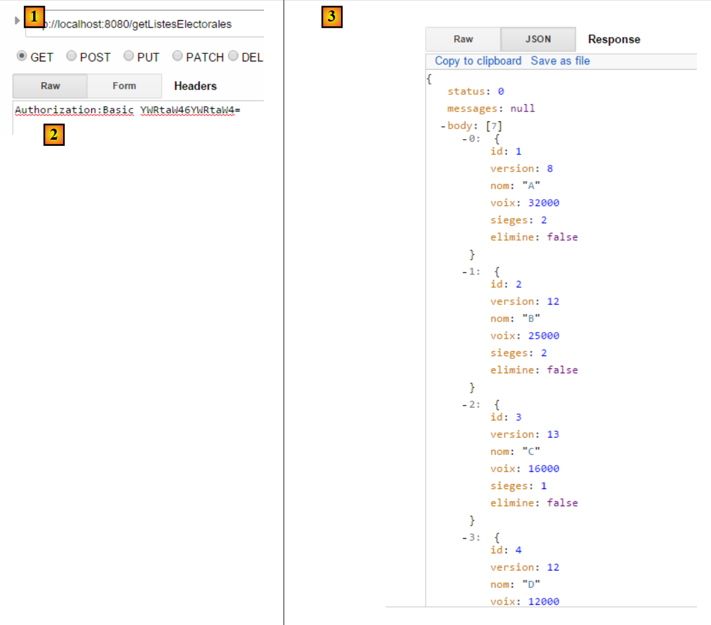
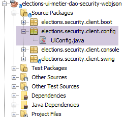

17. [TD]: segurança do servidor web / jSON das eleições
Palavras-chave: arquitetura multicamadas, Spring, injeção de dependências, serviço web / jSON seguro, cliente / servidor
Aplicamos agora o que aprendemos no capítulo anterior ao TD das eleições. A arquitetura será a seguinte:
 |
O processo decorrerá da seguinte forma:
- programação do servidor;
- programação do cliente sem a camada [ui], mas com um teste JUnit da camada [métier];
- gravação do cliente com a camada [ui];
17.1. Support
 |  |
Os projetos deste capítulo encontram-se na pasta [support / chap-17]. O script SQL serve para gerar a base de dados necessária para os testes.
17.2. A base de dados
A base de dados do servidor seguro deve agora conter as tabelas [USERS], [ROLES] e [USERS_ROLES]:
 |  |
O script SQL para a criação da base de dados está disponível na documentação de suporte.
17.3. O servidor seguro
Para configurar o servidor seguro das eleições, basta copiar e colar o projeto de exemplo [intro-spring-security-server-01]:
 |
Tarefa a realizar: renomeie os pacotes conforme indicado em [1].
Feito isto, alteramos o ficheiro [pom.xml] da seguinte forma:
<project xmlns="http://maven.apache.org/POM/4.0.0" xmlns:xsi="http://www.w3.org/2001/XMLSchema-instance"
xsi:schemaLocation="http://maven.apache.org/POM/4.0.0 http://maven.apache.org/xsd/maven-4.0.0.xsd">
<modelVersion>4.0.0</modelVersion>
<groupId>istia.st.elections</groupId>
<artifactId>elections-security-webjson-metier-dao-spring-data</artifactId>
<version>0.0.1-SNAPSHOT</version>
<name>elections-security-webjson-metier-dao-spring-data</name>
<description>elections spring security</description>
<properties>
<project.build.sourceEncoding>UTF-8</project.build.sourceEncoding>
<java.version>1.8</java.version>
</properties>
<parent>
<groupId>org.springframework.boot</groupId>
<artifactId>spring-boot-starter-parent</artifactId>
<version>1.2.7.RELEASE</version>
</parent>
<dependencies>
<dependency>
<groupId>istia.st.elections</groupId>
<artifactId>elections-webjson-metier-dao-spring-data</artifactId>
<version>0.0.1-SNAPSHOT</version>
</dependency>
<!-- Spring Security -->
...
</dependencies>
<!-- plug-ins -->
<build>
...
</build>
</project>
- nas linhas 23-27, substitua a dependência do projeto [intro-server-webjson-01] pela do projeto [elections-webjson-metier-dao-spring-data] abordado no parágrafo 12;
- nas linhas 4 a 7, introduza as características do novo projeto;
Resta-nos agora alterar as classes de configuração do projeto:
[DaoConfig]
package elections.security.config;
import org.springframework.context.annotation.Bean;
import org.springframework.context.annotation.ComponentScan;
import org.springframework.context.annotation.Import;
import org.springframework.data.jpa.repository.config.EnableJpaRepositories;
@EnableJpaRepositories(basePackages = { "elections.security.repositories" })
@ComponentScan(basePackages = { "elections.security.dao" })
@Import({ elections.dao.config.DaoConfig.class })
public class DaoConfig {
// constantes
final static private String[] ENTITIES_PACKAGES = { "elections.dao.entities", "elections.security.entities" };
@Bean
public String[] packagesToScan() {
return ENTITIES_PACKAGES;
}
}
As alterações encontram-se nas seguintes linhas:
- linhas 8, 9, 14: introduzir os nomes corretos dos pacotes;
- linha 10: a classe importada é agora [elections.dao.config.DaoConfig] do projeto [elections-webjson-metier-dao-spring-data];
Nota: tal como foi referido, esta configuração só funciona se a classe [elections.dao.config.DaoConfig] tiver a anotação [@Configuration]. Verifique este ponto.
[SecurityConfig]
package elections.security.config;
...
@EnableWebSecurity
@ComponentScan(basePackages = { "elections.security.service" })
@Import({ WebConfig.class, DaoConfig.class })
public class SecurityConfig extends WebSecurityConfigurerAdapter {
...
}
As alterações encontram-se nas seguintes linhas:
- linha 6: altere o nome do pacote;
É tudo. Faça um primeiro teste executando o teste JUnit []:
 |
Execute a classe de arranque [Boot] e, em seguida, com a extensão Chrome [Advanced Rest Client], faça o seguinte teste:
 |
Em [1], a solicitação. Em [3], a resposta. Em [2], o cabeçalho HTTP é o cabeçalho de autenticação do utilizador [admin, admin]: Authorization:Basic YWRtaW46YWRtaW4=
Veja agora as listas em competição:
 |
17.4. O cliente do servidor seguro sem a camada [ui]
 |
Faça um copiar/colar do projeto [elections-ui-metier-dao-webjson] para o projeto [elections-metier-dao-security-webjson].
 |
Tarefa a realizar: no [1], renomeie os pacotes, se necessário, e elimine os da camada [ui] e das classes de arranque [boot].
Vamos agora proceder tal como foi feito no parágrafo 16.5.
17.4.1. Configuração do Maven
Apenas a parte relativa à identificação do projeto muda:
<project xmlns="http://maven.apache.org/POM/4.0.0" xmlns:xsi="http://www.w3.org/2001/XMLSchema-instance"
xsi:schemaLocation="http://maven.apache.org/POM/4.0.0 http://maven.apache.org/xsd/maven-4.0.0.xsd">
<modelVersion>4.0.0</modelVersion>
<groupId>istia.st.elections</groupId>
<artifactId>elections-metier-dao-security-webjson</artifactId>
<version>0.0.1-SNAPSHOT</version>
<description>Client jUnit du serveur web / jSON</description>
<name>elections-metier-dao-security-webjson</name>
...
17.4.2. Reestruturação da camada [métier]
 |
A interface [IElectionsMetier] sofre as seguintes alterações:
package elections.security.client.metier;
import elections.security.client.entities.ListeElectorale;
import elections.security.client.entities.User;
public interface IElectionsMetier {
// autenticação
public void authenticate(User user);
// obter as listas em competição
public ListeElectorale[] getListesElectorales(User user);
// o número de lugares a preencher
public int getNbSiegesAPourvoir(User user);
// o limiar eleitoral
public double getSeuilElectoral(User user);
// registo dos resultados
public void recordResultats(User user, ListeElectorale[] listesElectorales);
// cálculo dos lugares
public ListeElectorale[] calculerSieges(User user, ListeElectorale[] listesElectorales);
}
Todos os métodos têm como primeiro parâmetro o utilizador que pretende utilizar os recursos do servidor seguro.
A implementação [ElectionsMetier] evolui da seguinte forma:
package elections.security.client.metier;
import java.io.IOException;
import org.springframework.beans.factory.annotation.Autowired;
import org.springframework.context.ApplicationContext;
import org.springframework.stereotype.Component;
import com.fasterxml.jackson.core.type.TypeReference;
import com.fasterxml.jackson.databind.ObjectMapper;
import elections.security.client.dao.IClientDao;
import elections.security.client.entities.ElectionsConfig;
import elections.security.client.entities.ElectionsException;
import elections.security.client.entities.ListeElectorale;
import elections.security.client.entities.User;
@Component
public class ElectionsMetier implements IElectionsMetier {
@Autowired
private IClientDao dao;
@Autowired
private ApplicationContext context;
// configuração da eleição
private ElectionsConfig electionsConfig;
private ElectionsConfig getElectionsConfig(User user) {
if(electionsConfig!=null){
return electionsConfig;
}
// mapadores jSON
ObjectMapper mapperResponse = context.getBean(ObjectMapper.class);
try {
// consulta
Response<ElectionsConfig> response = mapperResponse.readValue(dao.getResponse(user, "/getElectionsConfig", null),
new TypeReference<Response<ElectionsConfig>>() {
});
// erro?
if (response.getStatus() != 0) {
// é lançada 1 exceção
throw new ElectionsException(response.getStatus(), response.getMessages());
} else {
electionsConfig = response.getBody();
return electionsConfig;
}
} catch (ElectionsException e1) {
throw e1;
} catch (IOException | RuntimeException e2) {
throw new ElectionsException(100, e2);
}
}
@Override
public ListeElectorale[] getListesElectorales(User user) {
...
}
@Override
public int getNbSiegesAPourvoir(User user) {
return getElectionsConfig(user).getNbSiegesAPourvoir();
}
@Override
public double getSeuilElectoral(User user) {
return getElectionsConfig(user).getSeuilElectoral();
}
@Override
public void recordResultats(User user, ListeElectorale[] listesElectorales) {
...
}
@Override
public ListeElectorale[] calculerSieges(User user, ListeElectorale[] listesElectorales) {
...
}
@Override
public void authenticate(User user) {
dao.getResponse(user, "/authenticate", null);
}
}
Tarefa: complete o código acima.
17.4.3. Configuração do Spring
 |
A classe [MetierConfig] é alterada da seguinte forma:
package elections.security.client.config;
...
@ComponentScan({ "elections.security.client.dao", "elections.security.client.metier" })
public class MetierConfig {
Na linha 5, os pacotes a explorar devem ser atualizados.
17.4.4. O teste JUnit da camada [métier]
 |
A classe de teste [Test01] evolui da seguinte forma:
package elections.security.client.metier.junit;
import org.junit.Assert;
import org.junit.BeforeClass;
import org.junit.Test;
import org.junit.runner.RunWith;
import org.springframework.beans.factory.annotation.Autowired;
import org.springframework.boot.test.SpringApplicationConfiguration;
import org.springframework.test.context.junit4.SpringJUnit4ClassRunner;
import com.fasterxml.jackson.core.JsonProcessingException;
import com.fasterxml.jackson.databind.ObjectMapper;
import elections.security.client.config.MetierConfig;
import elections.security.client.entities.ElectionsException;
import elections.security.client.entities.ListeElectorale;
import elections.security.client.entities.User;
import elections.security.client.metier.IElectionsMetier;
@SpringApplicationConfiguration(classes = MetierConfig.class)
@RunWith(SpringJUnit4ClassRunner.class)
public class Test01 {
// camada [electionsMetier]
@Autowired
private IElectionsMetier electionsMetier;
// mapeador jSON
private final ObjectMapper mapper = new ObjectMapper();
// utilizadores
static private User admin;
static private User user;
static private User unknown;
@BeforeClass
public static void initTest() {
admin = new User("admin", "admin");
user = new User("user", "user");
unknown = new User("x", "y");
}
@Test()
public void checkUserUser() {
ElectionsException se = null;
try {
electionsMetier.authenticate(user);
} catch (ElectionsException e) {
se = e;
}
Assert.assertNotNull(se);
Assert.assertEquals("403 Forbidden", se.getErreurs().get(0));
}
@Test()
public void checkUserUnknown() {
ElectionsException se = null;
try {
electionsMetier.authenticate(unknown);
} catch (ElectionsException e) {
se = e;
}
Assert.assertNotNull(se);
Assert.assertEquals("401 Unauthorized", se.getErreurs().get(0));
}
@Test()
public void checkUserAdmin() {
ElectionsException se = null;
try {
electionsMetier.authenticate(admin);
} catch (ElectionsException e) {
se = e;
}
Assert.assertNull(se);
}
/**
* vérification 1 : méthode de calcul des sièges on fixe en dur les listes
*/
@Test
public void calculSieges1() {
// cria-se a tabela das 7 listas de candidatos
ListeElectorale[] listes = new ListeElectorale[7];
listes[0] = new ListeElectorale("A", 32000, 0, false);
listes[1] = new ListeElectorale("B", 25000, 0, false);
listes[2] = new ListeElectorale("C", 16000, 0, false);
listes[3] = new ListeElectorale("D", 12000, 0, false);
listes[4] = new ListeElectorale("E", 8000, 0, false);
listes[5] = new ListeElectorale("F", 4500, 0, false);
listes[6] = new ListeElectorale("G", 2500, 0, false);
// calculam-se os lugares de cada uma das listas
listes = electionsMetier.calculerSieges(admin,listes);
// verificam-se os resultados
Assert.assertEquals(2, listes[0].getSieges());
Assert.assertFalse(listes[0].isElimine());
Assert.assertEquals(2, listes[1].getSieges());
Assert.assertFalse(listes[1].isElimine());
Assert.assertEquals(1, listes[2].getSieges());
Assert.assertFalse(listes[2].isElimine());
Assert.assertEquals(1, listes[3].getSieges());
Assert.assertFalse(listes[3].isElimine());
Assert.assertEquals(0, listes[4].getSieges());
Assert.assertFalse(listes[4].isElimine());
Assert.assertEquals(0, listes[5].getSieges());
Assert.assertTrue(listes[5].isElimine());
Assert.assertEquals(0, listes[6].getSieges());
Assert.assertTrue(listes[6].isElimine());
}
/**
* vérification 2 : méthode de calcul des sièges on demande les listes à la couche [metier] puis on fixe en dur les
* voix
*/
@Test
public void calculSieges2() {
// cria-se a tabela das 7 listas de candidatos
ListeElectorale[] listes = electionsMetier.getListesElectorales(admin);
// fixam-se os votos
listes[0].setVoix(32000);
listes[1].setVoix(25000);
listes[2].setVoix(16000);
listes[3].setVoix(12000);
listes[4].setVoix(8000);
listes[5].setVoix(4500);
listes[6].setVoix(2500);
// calculam-se os lugares obtidos por cada uma das listas
listes = electionsMetier.calculerSieges(admin,listes);
// verifica-se os resultados
Assert.assertEquals(2, listes[0].getSieges());
Assert.assertFalse(listes[0].isElimine());
Assert.assertEquals(2, listes[1].getSieges());
Assert.assertFalse(listes[1].isElimine());
Assert.assertEquals(1, listes[2].getSieges());
Assert.assertFalse(listes[2].isElimine());
Assert.assertEquals(1, listes[3].getSieges());
Assert.assertFalse(listes[3].isElimine());
Assert.assertEquals(0, listes[4].getSieges());
Assert.assertFalse(listes[4].isElimine());
Assert.assertEquals(0, listes[5].getSieges());
Assert.assertTrue(listes[5].isElimine());
Assert.assertEquals(0, listes[6].getSieges());
Assert.assertTrue(listes[6].isElimine());
}
/**
* vérification 3 méthode de calcul des sièges on provoque une exception
*/
@Test(expected = ElectionsException.class)
public void calculSieges3() {
// cria-se uma tabela com 24 listas de candidatos, cada uma com 1 voto
ListeElectorale[] listes = new ListeElectorale[25];
// as 25 listas terão o mesmo número de votos (4%)
for (int i = 0; i < listes.length; i++) {
listes[i] = new ListeElectorale("Liste" + (i + 1), 1, 0, false);
}
// cálculo dos assentos - normalmente deve ser ElectionsException
// com um limiar eleitoral de 5%
electionsMetier.calculerSieges(admin,listes);
}
/**
* enregistrement des résultats de l'élection
*
* @throws JsonProcessingException
*/
@Test
public void ecritureResultatsElections() throws JsonProcessingException {
// cria-se a tabela das 7 listas de candidatos
ListeElectorale[] listes = electionsMetier.getListesElectorales(admin);
// definem-se os votos de forma fixa
listes[0].setVoix(32000);
listes[1].setVoix(25000);
listes[2].setVoix(16000);
listes[3].setVoix(12000);
listes[4].setVoix(8000);
listes[5].setVoix(4500);
listes[6].setVoix(2500);
// calculam-se os lugares obtidos por cada uma das listas
listes = electionsMetier.calculerSieges(admin,listes);
// exibem-se os resultados
for (int i = 0; i < listes.length; i++) {
System.out.println(mapper.writeValueAsString(listes[i]));
}
// os resultados são gravados na base de dados
electionsMetier.recordResultats(admin,listes);
// verifica-se os resultados
listes = electionsMetier.getListesElectorales(admin);
// são apresentados os resultados
for (int i = 0; i < listes.length; i++) {
System.out.println(mapper.writeValueAsString(listes[i]));
}
Assert.assertEquals(2, listes[0].getSieges());
Assert.assertFalse(listes[0].isElimine());
Assert.assertEquals(2, listes[1].getSieges());
Assert.assertFalse(listes[1].isElimine());
Assert.assertEquals(1, listes[2].getSieges());
Assert.assertFalse(listes[2].isElimine());
Assert.assertEquals(1, listes[3].getSieges());
Assert.assertFalse(listes[3].isElimine());
Assert.assertEquals(0, listes[4].getSieges());
Assert.assertFalse(listes[4].isElimine());
Assert.assertEquals(0, listes[5].getSieges());
Assert.assertTrue(listes[5].isElimine());
Assert.assertEquals(0, listes[6].getSieges());
Assert.assertTrue(listes[6].isElimine());
}
}
Tarefa a realizar: compreenda este teste e verifique se ele é bem-sucedido.
17.5. O cliente do servidor seguro com uma camada [console]
 |
Com o NetBeans, abrimos os projetos Maven [elections-metier-dao-security-webjson] e [elections-ui-metier-dao-webjson] e, em seguida, criamos um novo projeto [elections-console-metier-dao-security-webjson] através de uma cópia/colagem do projeto [elections-ui-metier-dao-webjson]:
 |
A maioria das classes do novo projeto [3] provém do projeto [elections-ui-metier-dao-webjson] e [2], que era o cliente do servidor web / jSON não seguro:
 |
Siga estes passos para criar o novo projeto Maven:
- faça uma cópia e cole o projeto [elections-ui-metier-dao-webjson] no projeto [elections-ui-metier-dao-security-webjson];
- no novo projeto:
- elimine os pacotes [elections.client.dao, elections.client.metier, elections.client.entities];
- no pacote [elections.client.ui], mantenha apenas a classe console [ElectionsConsole] e a sua interface [IElectionsUI];
- renomeie os pacotes conforme indicado para [3];
- resolva os problemas de importação nas várias classes através de [clic droit / Fix Imports];
Nesta fase, o novo projeto apresenta numerosos erros.
17.5.1. Configuração do Maven
O ficheiro [pom.xml] do novo projeto é o seguinte:
<project xmlns="http://maven.apache.org/POM/4.0.0" xmlns:xsi="http://www.w3.org/2001/XMLSchema-instance"
xsi:schemaLocation="http://maven.apache.org/POM/4.0.0 http://maven.apache.org/xsd/maven-4.0.0.xsd">
<modelVersion>4.0.0</modelVersion>
<groupId>istia.st.elections</groupId>
<artifactId>elections-console-metier-dao-security-webjson</artifactId>
<version>0.0.1-SNAPSHOT</version>
<name>elections-console-metier-dao-security-webjson</name>
<description>couche console du client web / jSON</description>
<properties>
<project.build.sourceEncoding>UTF-8</project.build.sourceEncoding>
<java.version>1.8</java.version>
</properties>
<parent>
<groupId>org.springframework.boot</groupId>
<artifactId>spring-boot-starter-parent</artifactId>
<version>1.2.7.RELEASE</version>
</parent>
<dependencies>
<dependency>
<groupId>istia.st.elections</groupId>
<artifactId>elections-metier-dao-security-webjson</artifactId>
<version>0.0.1-SNAPSHOT</version>
</dependency>
</dependencies>
<build>
<plugins>
<plugin>
<groupId>org.apache.maven.plugins</groupId>
<artifactId>maven-surefire-plugin</artifactId>
<version>2.18.1</version>
</plugin>
</plugins>
</build>
</project>
- linhas 4-8: a identidade Maven do novo projeto;
- linhas 22-26: a dependência do projeto [elections-metier-dao-security-webjson] que acabámos de criar no parágrafo 17.4, e que fornece as camadas [DAO] e [métier];
17.5.2. Configuração do Spring
 |
A classe [UiConfig] é a seguinte:
package elections.security.client.config;
import elections.security.client.entities.User;
import org.springframework.context.annotation.Bean;
import org.springframework.context.annotation.ComponentScan;
import org.springframework.context.annotation.Import;
@Import(MetierConfig.class)
@ComponentScan(basePackages = {"elections.security.client.console","elections.security.client.swing"})
public class UiConfig {
// administrador
private final User ADMIN = new User("admin", "admin");
@Bean
private User admin() {
return ADMIN;
}
}
- linha 8: importa-se a classe [elections.security.client.config.MetierConfig] do projeto [elections-metier-dao-security-webjson] analisado no parágrafo 17.4;
- linha 9: declaram-se os pacotes onde se encontram os beans Spring;
- linhas 12-18: o bean [admin] corresponde ao utilizador [admin, admin], que será utilizado pela aplicação de consola. Recorde-se que este é o único utilizador autorizado a consultar o servidor web seguro /jSON;
17.5.3. A aplicação de arranque da consola
 |
A classe [ElectionsConsole] evolui da seguinte forma:
package elections.security.client.console;
import java.util.Arrays;
import java.util.Comparator;
import java.util.Scanner;
import org.springframework.beans.factory.annotation.Autowired;
import org.springframework.stereotype.Component;
import elections.security.client.entities.ElectionsException;
import elections.security.client.entities.ListeElectorale;
import elections.security.client.entities.User;
import elections.security.client.metier.IElectionsMetier;
@Component
public class ElectionsConsole implements IElectionsUI {
@Autowired
private IElectionsMetier electionsMetier;
@Autowired
private User admin;
@Override
public void run() {
// as listas em competição
ListeElectorale[] listes;
// introdução de dados
try (Scanner clavier = new Scanner(System.in)) {
// solicitam-se as listas em competição à camada [metier]
listes = electionsMetier.getListesElectorales(admin);
// efetua-se a contagem dos votos
System.out.println("Il y a " + listes.length
+ " listes en compétition. Veuillez indiquer le nombre de voix de chacune d'elles :");
for (int i = 0; i < listes.length; i++) {
boolean saisieOK = false;
while (!saisieOK) {
System.out.print("Nombre de voix de la liste [" + listes[i].getNom() + "] : ");
try {
listes[i].setVoix(Integer.parseInt(clavier.nextLine()));
saisieOK = true;
} catch (ElectionsException | NumberFormatException ex) {
System.out.println("Nombre de voix incorrect. Veuillez recommencer");
}
}
}
}
// efetua-se o cálculo dos lugares
listes=electionsMetier.calculerSieges(admin,listes);
// regista-se os resultados
electionsMetier.recordResultats(admin,listes);
// ordena-se as listas por ordem decrescente de votos
Arrays.sort(listes, new CompareListesElectorales());
// são apresentadas
System.out.println("\nRésultats de l'élection\n");
for (int i = 0; i < listes.length; i++) {
System.out.println(listes[i]);
}
}
// classe de comparação de listas eleitorais
class CompareListesElectorales implements Comparator<ListeElectorale> {
// comparação de duas listas de candidatos com base no número de votos
@Override
public int compare(ListeElectorale listeElectorale1, ListeElectorale listeElectorale2) {
// comparam-se os votos destas duas listas
int nbVoix1 = listeElectorale1.getVoix();
int nbVoix2 = listeElectorale2.getVoix();
if (nbVoix1 < nbVoix2) {
return +1;
} else {
if (nbVoix1 > nbVoix2)
return -1;
else
return 0;
}
}
}
}
A classe ElectionsConsole sofre poucas alterações. Basta ter em conta que, agora, os métodos da camada [métier] exigem, como primeiro parâmetro, um utilizador (linhas 31, 49, 51). Este é fornecido pela injeção nas linhas 21-22. O utilizador injetado é aquele autorizado a consultar o servidor web / jSON.
Tarefa a realizar: teste a aplicação de consola (não se esqueça de iniciar previamente o servidor seguro).
17.6. O cliente do servidor seguro com uma camada [swing]
 |
Criamos um novo projeto NetBeans [elections-swing-metier-dao-security-webjson] através de um copiar/colar do projeto [elections-ui-metier-dao-webjson]:
 |
No novo projeto [2]:
- elimine os pacotes [elections.client.dao, elections.client.metier, elections.client.entities];
- no pacote [elections.client.ui], elimine as classes [ElectionsConsole, IElectionsUI];
- renomeie os pacotes conforme indicado em [2];
- no pacote [elections.security.client.swing], renomeie a classe [AbstractElectionsSwing], que implementa a interface gráfica, para [AbstractElectionsMainForm], e a classe [ElectionsSwing], que implementa os gestores de eventos dainterface gráfica para [ElectionsMainForm];
- resolva os problemas de importação nas várias classes através de [clic droit / Fix Imports];
Nesta fase, existem muitos erros.
17.6.1. Configuração do Maven
O ficheiro [pom.xml] evolui da seguinte forma:
<project xmlns="http://maven.apache.org/POM/4.0.0" xmlns:xsi="http://www.w3.org/2001/XMLSchema-instance"
xsi:schemaLocation="http://maven.apache.org/POM/4.0.0 http://maven.apache.org/xsd/maven-4.0.0.xsd">
<modelVersion>4.0.0</modelVersion>
<groupId>istia.st.elections</groupId>
<artifactId>elections-swing-metier-dao-security-webjson</artifactId>
<version>0.0.1-SNAPSHOT</version>
<name>elections-swing-metier-dao-security-webjson</name>
<description>couche swing du client web / jSON</description>
<properties>
<project.build.sourceEncoding>UTF-8</project.build.sourceEncoding>
<java.version>1.8</java.version>
</properties>
<parent>
<groupId>org.springframework.boot</groupId>
<artifactId>spring-boot-starter-parent</artifactId>
<version>1.2.7.RELEASE</version>
</parent>
<dependencies>
<dependency>
<groupId>istia.st.elections</groupId>
<artifactId>elections-console-metier-dao-security-webjson</artifactId>
<version>0.0.1-SNAPSHOT</version>
</dependency>
</dependencies>
<build>
<plugins>
<plugin>
<groupId>org.apache.maven.plugins</groupId>
<artifactId>maven-surefire-plugin</artifactId>
<version>2.18.1</version>
</plugin>
</plugins>
</build>
</project>
- linhas 4-8: a identidade Maven do novo projeto;
- linhas 22-26: uma dependência do projeto console que acabámos de analisar no parágrafo 17.5;
17.6.2. Configuração do Spring
Este projeto utiliza a configuração Spring do projeto «console» que importa (ver parágrafo 17.5.2).
17.6.3. As vistas da aplicação Swing
 |
Este projeto irá utilizar duas vistas:
 |
- a vista de início de sessão [1] é nova. Serve para autenticar o utilizador que pretende utilizar a aplicação. Utiliza as classes:
- [AbstractElectionsConnectForm], que implementa a vista;
- [ElectionsConnectForm], que gere os eventos da vista;
- a vista [2] já é conhecida. É a que tem sido utilizada até agora. Utiliza as seguintes classes:
- [AbstractElectionsMainForm], que implementa a vista;
- [ElectionsMainForm], que gere os eventos da vista;
17.6.4. A sessão
 |
Quando uma aplicação Swing tem várias vistas, é necessário encontrar uma forma de uma vista poder passar informação para outra vista. Utilizamos um conceito empregue no desenvolvimento web: a sessão, que permite que as vistas associadas a um utilizador específico partilhem informação. Este conceito será implementado aqui com a ajuda de um singleton Spring que será injetado nas duas classes que gerem os eventos das duas vistas:
package elections.security.client.swing;
import elections.security.client.entities.User;
import org.springframework.stereotype.Component;
@Component
public class UiSession {
// o utilizador que está conectado
private User user;
// getters e setters
...
}
- linha 6: a classe [UiSession] é um componente Spring;
- linha 10: serve apenas para uma coisa: memorizar o utilizador que inicia sessão na vista [1]. A vista [2], que precisa de saber quem é esse utilizador, irá buscá-lo aí;
17.6.5. A classe de arranque
 |
A classe de inicialização da aplicação gráfica é a seguinte:
package elections.security.client.boot;
import elections.security.client.console.IElectionsUI;
public class BootElectionsSwing extends AbstractBootElections {
public static void main(String[] arguments) {
new BootElectionsSwing().run();
}
@Override
protected IElectionsUI getUI() {
return ctx.getBean("electionsConnectForm", IElectionsUI.class);
}
}
- linha 5: a classe [BootElectionsSwing] estende a classe [AbstractBootElections] definida no projeto de consola presente nas dependências do projeto;
- linhas 10-13: a classe [BootElectionsSwing] irá apresentar a vista de início de sessão [ElectionsConnectForm];
- linhas 6-8: é o método [run] desta classe que será executado;
17.6.6. A classe [ElectionsMainForm]
A classe [ElectionsMainForm] é aquela que anteriormente se chamava [ElectionsSwing]. Ela gere os eventos da vista [AbstractElectionsMainForm]. O seu código evolui da seguinte forma:
package elections.security.client.swing;
import elections.security.client.console.IElectionsUI;
import java.awt.Dimension;
import java.awt.Toolkit;
import java.util.ArrayList;
import java.util.List;
import javax.swing.DefaultListModel;
import javax.swing.JLabel;
import javax.swing.JMenuItem;
import javax.swing.JOptionPane;
import org.springframework.beans.factory.annotation.Autowired;
import org.springframework.stereotype.Component;
import elections.security.client.entities.ElectionsException;
import elections.security.client.entities.ListeElectorale;
import elections.security.client.entities.User;
import elections.security.client.metier.IElectionsMetier;
@Component
public class ElectionsMainForm extends AbstractElectionsMainForm implements IElectionsUI {
private static final long serialVersionUID = 1L;
// referência na camada [métier]
@Autowired
private IElectionsMetier metier;
// sessão UI
@Autowired
private UiSession uiSession;
// utilizador conectado
private User user;
// modelos das listas JList
private DefaultListModel<String> modèleNomsVoix = null;
private DefaultListModel<String> modèleRésultats = null;
// as listas em competição
private ListeElectorale[] listes;
// listas introduzidas pelo utilizador
private final List<ListeElectorale> listesSaisies = new ArrayList<>();
private ListeElectorale[] tListesSaisies;
// inicializações
@Override
protected void init() {
// geração de componentes pela classe pai
super.init();
// inicializações locais
modèleNomsVoix = new DefaultListModel<>();
jListNomsVoix.setModel(modèleNomsVoix);
modèleRésultats = new DefaultListModel<>();
jListResultats.setModel(modèleRésultats);
String info;
boolean erreur = false;
try {
// solicitam-se as listas à camada [métier]
listes = metier.getListesElectorales(user);
// associa-se os nomes das listas ao menu suspenso jComboBoxNomsListes
for (int i = 0; i < listes.length; i++) {
jComboBoxNomsListes.addItem(String.format("%s - %s", listes[i].getId(), listes[i].getNom()));
}
// bem como os parâmetros da eleição
int nbSiegesAPourvoir = metier.getNbSiegesAPourvoir(user);
double seuilElectoral = metier.getSeuilElectoral(user);
// inicializam-se os rótulos associados a estas duas informações
jLabelSAP.setText(jLabelSAP.getText() + nbSiegesAPourvoir);
jLabelSE.setText(jLabelSE.getText() + seuilElectoral);
// mensagem de sucesso
info = "Source de données lue avec succès";
} catch (ElectionsException ex1) {
// regista-se o erro
info = getInfoForException("Les erreurs suivantes se sont produites :", ex1);
erreur = true;
} catch (RuntimeException ex2) {
// regista-se o erro
info = getInfoForException("Les erreurs suivantes se sont produites :", ex2);
erreur = true;
}
// erro?
if (erreur) {
// exibe a informação
jTextPaneMessages.setText(info);
jTextPaneMessages.setCaretPosition(0);
return;
} else {
jTextPaneMessages.setText("");
}
// estado do formulário
Utilitaires.setEnabled(new JLabel[]{jLabelAjouter, jLabelCalculer, jLabelEnregistrer, jLabelSupprimer}, false);
Utilitaires.setEnabled(
new JMenuItem[]{jMenuItemAjouter, jMenuItemCalculer, jMenuItemEnregistrer, jMenuItemSupprimer}, false);
// centrar a janela
Dimension screenSize = Toolkit.getDefaultToolkit().getScreenSize();
Dimension frameSize = getSize();
if (frameSize.height > screenSize.height) {
frameSize.height = screenSize.height;
}
if (frameSize.width > screenSize.width) {
frameSize.width = screenSize.width;
}
setLocation((screenSize.width - frameSize.width) / 2, (screenSize.height - frameSize.height) / 2);
}
...
@Override
public void run() {
// memorização do utilizador
user = uiSession.getUser();
// inicialização da janela
init();
setVisible(true);
}
}
- linhas 32-33: injeção da sessão da aplicação;
- linhas 112-119: a vista será ativada, tal como anteriormente, através do seu método [run];
- linha 115: recupera-se o utilizador da sessão. Este terá sido inserido na sessão pelo código da vista de início de sessão [ElectionsConnectForm]. O código é então alterado para que o primeiro parâmetro das chamadas à camada [métier] seja esse utilizador (linhas 63, 69-70, por exemplo);
17.6.7. A vista [AbstractElectionsConnectForm]
 |
Crie com o NetBeans o seguinte formulário:
 |
A classe não irá implementar por si própria o método que gere o clique na opção de menu [Connexion]. Irá recorrer a um método [doConnecter] declarado como abstrato e a classe da vista será, por sua vez, declarada como abstrata. Será eliminado o método estático [main], que foi gerado automaticamente.
17.6.8. Gestão dos eventos da vista de ligação
 |
A classe [ElectionsConnectForm] implementa a gestão de eventos da vista de ligação da seguinte forma:
package elections.security.client.swing;
import elections.security.client.console.IElectionsUI;
import elections.security.client.entities.ElectionsException;
import elections.security.client.entities.User;
import elections.security.client.metier.IElectionsMetier;
import java.awt.Dimension;
import java.awt.Toolkit;
import javax.swing.SwingUtilities;
import org.springframework.beans.factory.annotation.Autowired;
import org.springframework.stereotype.Component;
@Component
public class ElectionsConnectForm extends AbstractElectionsConnectForm implements IElectionsUI {
private static final long serialVersionUID = 1L;
// referência na camada [métier]
@Autowired
private IElectionsMetier metier;
// utilizador conectado
private User user;
// formulário principal
@Autowired
private ElectionsMainForm electionsMainForm;
// sessão UI
@Autowired
private UiSession uiSession;
@Override
protected void doConnect() {
String info = null;
try {
if (isPageValid()) {
// autenticação do utilizador
metier.authenticate(user);
// o utilizador é guardado na sessão
uiSession.setUser(user);
// a página de início de sessão é ocultada
setVisible(false);
// a vista principal é apresentada
electionsMainForm.run();
}
} catch (ElectionsException ex1) {
// regista-se o erro
info = getInfoForException("Les erreurs suivantes se sont produites :", ex1);
} catch (RuntimeException ex2) {
// regista-se o erro
info = getInfoForException("Les erreurs suivantes se sont produites :", ex2);
}
// erro?
if (info != null) {
// a informação é apresentada
jTextPaneErreurs.setText(info);
jTextPaneErreurs.setCaretPosition(0);
}
}
// inicializações
@Override
protected void init() {
// geração dos componentes pela classe pai
super.init();
// inicializações locais
...
// centrar a janela
...
}
@Override
public void run() {
// exibe a interface gráfica
SwingUtilities.invokeLater(new Runnable() {
public void run() {
init();
setVisible(true);
}
});
}
private boolean isPageValid() {
...
}
private String getInfoForException(String message, ElectionsException ex) {
...
}
private String getInfoForException(String message, RuntimeException ex) {
...
}
}
- linhas 73-82: o método [run], que será chamado pela classe de inicialização [BootElectionsSwing];
- linhas 26-27: injeção de uma referência à vista n.º 2, que deverá ser apresentada se o utilizador for reconhecido;
- linhas 30-31: inserção da sessão da aplicação;
- linha 84: o método [isPageValid] faz duas coisas:
- verifica se o identificador não está vazio (a palavra-passe pode estar);
- instancia o campo «User» da linha 23 com os dados introduzidos;
 |  |
 |  |
Tarefa: complete o código da classe.
Tarefa: Teste a aplicação.